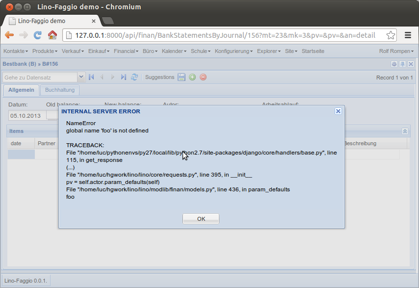
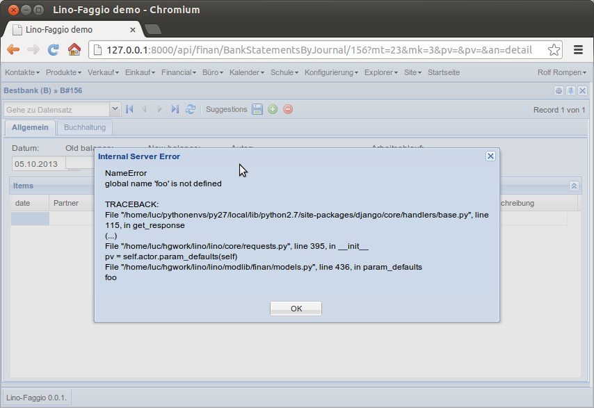

20131005 (Saturday, 05 October 2013)¶
Continued on Lino Faggio.
Generating more demo data.
lino.modlib.ledger.fixtures.mini now generates simple
monthly sales invoices with 3 products Foo, Bar and Baz.
Added a “basic accounting truths” section to Faggio. These things are still evolving. For example a Sales journal has its dc field set to Debit, but what exactly does that mean? It means that a voucher with a non-negative total amount will debitate the partner account (and thus creditate the sales account).
Since DebitOrCreditField
is basically just a BooleanField, it used to be rendered as a checkbox.
Now we have a new magic attribute “lino_atomizer_class”.
We don’t want to define this as a core atomizer because this
implementation is just one possible choice.
I wasted one hour into something which was absolutely not necessary: when an internal server error occurs I wanted Lino to not “shout” at the user, i.e. to say “Internal Server Error” instead of “INTERNAL SERVER ERROR” as the title of the alert message.
Since that title is the “response status text”, which is not really easy to customize, I let the client to the work. Added a function toCamel to the Javascript String class:
String.prototype.toCamel = function(){
return this.replace(/([A-Z])([A-Z]+)/g, function(match,p1,p2,offset,string){
return p1 + p2.toLowerCase();});
};
Here is a screenshot after and another before:
 lino.modlib.ledger.fixtures.mini now also generates
monthly payment orders and bank statements.
The trade_type of a financial journal was ignored until now. But now it is used to limit the suggestions made. A side effect is that “Payment orders” moves from “Financial” menu to “Purchases” menu.
BankStatements now get their balance1 filled with balance2 from previous statement.
TODO:
- Lino should update the total of a PaymentOrder (or the balance2 of a BankStatement) after filling suggestions.
- possibility to toggle selection modes (cell/row) dyamically
- possibility to delete all items of a voucher at once (but not the voucher)
- Layout of the Detail of a BankStatement when there’s not much room: The workflow_buttons is a DisplayField and gets “as much as possible” width, that’s okay but Lino seems to set inadequate minWidth values for certain widget types (Dates).

{kind=link}
{kind=link}